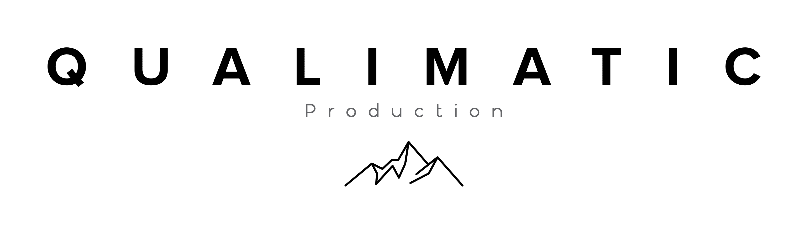

Élégance
3 300 €TTC
Jusqu'au vin d'honneur (9h → 18h). Préparatifs, cérémonie, séance couple, drone signature, film 6-8 min, coffret USB bois offert.

La ville de Léonard de Vinci, balcon de pierre au-dessus de la Loire — par Charly Coulardot.
Je suis vidéaste de mariage en Vallée de la Loire, et Amboise fait partie des noms qui reviennent le plus souvent. La ville a quelque chose de particulier : un château royal accroché à la falaise, la Loire à ses pieds, et juste à côté le Clos Lucé, où Léonard de Vinci a vécu ses trois dernières années.
Amboise est en Touraine, au cœur de ma zone. Je m'y déplace sans frais de déplacement, depuis mon atelier de Romorantin — un peu plus d'une heure de route. Cette page rassemble l'essentiel si vous pensez à un mariage ici : le décor, la lumière, l'accès et la façon dont je l'aborderais.
Le château royal d'Amboise domine la ville depuis son éperon rocheux. François Ier y a grandi ; Léonard de Vinci y est inhumé, dans la chapelle Saint-Hubert. Vu d'en bas, depuis les quais ou le pont, il compose un plan large impressionnant : la pierre blonde, la Loire, et le ciel souvent vaste de la vallée.
À quelques centaines de mètres, le Clos Lucé raconte une autre histoire. C'est dans ce manoir de brique et de tuffeau que François Ier installa Léonard en 1516. Le maître y travailla jusqu'à sa mort, le 2 mai 1519. La tradition rapporte qu'un souterrain reliait les deux demeures ; les premiers mètres se visitent encore.
Et puis il y a la ville elle-même : ruelles pavées, maisons à pans de bois, terrasses au bord de l'eau. De quoi nourrir un film sans jamais sortir d'Amboise.
Amboise est tournée vers la Loire, plein sud. En fin de journée, la lumière vient frapper la façade du château et la pierre s'allume. C'est une fenêtre courte mais précieuse, que je guette pour les séances couple.
Comme partout, je travaille sans lumière artificielle, avec ce que la journée donne. Double caméra discrète, approche documentaire. Le drone, si le lieu et la réglementation l'autorisent — je suis télépilote certifié et je m'occupe des autorisations en amont. Le château et ses abords sont un secteur surveillé : rien ne se décide sur place.
Amboise est bien reliée. La ville a sa propre gare, à une vingtaine de minutes de Tours en TER. Pour vos invités venus de Paris, le plus rapide passe par Saint-Pierre-des-Corps en TGV — environ une heure depuis Paris-Montparnasse — puis une courte correspondance. Certaines liaisons relient aussi Amboise directement à la capitale.
En voiture, Tours est à environ 25 km. Depuis mon atelier de Romorantin, je compte un peu plus d'une heure par l'A85. Aucun frais de déplacement n'est ajouté pour un mariage en Touraine.
Le château royal d'Amboise est un monument géré par une fondation : il n'accueille pas les mariages privés au format classique, même s'il ouvre certains espaces à des événements et des séances sous conditions. Le mariage civil se tient en mairie, et la réception se fait le plus souvent dans un domaine privé des environs.
Cela ne change rien à la place du château dans le film : il reste un décor possible, en arrière-plan d'une séance couple ou d'un plan large sur la ville. Si vous cherchez encore votre lieu de réception en pays d'Amboise, je peux vous orienter vers des domaines que je connais de réputation, sans rien vous imposer.
Mon travail se décline en deux formules pensées pour s'adapter à votre journée — sans jamais transiger sur la qualité du film final.
Jusqu'au vin d'honneur (9h → 18h). Préparatifs, cérémonie, séance couple, drone signature, film 6-8 min, coffret USB bois offert.
Journée complète (9h → 1h). Drone classique + FPV, prise de son pro, teaser 72h, film court + film complet, coffret USB bois offert.